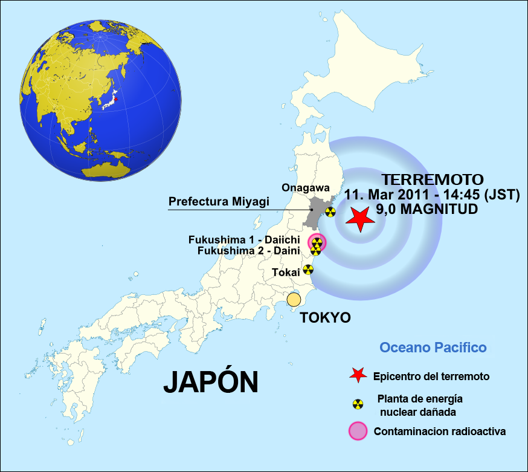

¿ENERGÍA NUCLEAR EN MÉXICO?
INTRODUCCIÓN
Este proyecto está orientado a divulgar acerca de la energía nuclear y sus posibles implementaciones en México, tratando de aclarar el sesgo negativo de este tipo de energía entre la población mexicana, para así poder alentar la creación de proyectos y su implementación. Utilizando recursos científicos que expliquen temas fundamentales para el entendimiento de esta energíaaplicando los conocimientos aprendidos y divulgando los temas de interés para el proyecto.
METODOLOGÍA
Para iniciar, describimos la situación actual de México y la baja popularidad que cuenta la energía nuclear en el país debido a malentendidos del pasado que contaron con negligencias humanas. Sin embargo, esta investigación cuenta con diversos puntos clave para el desarrollo de nuestro argumento: Sucesos desafortunados en la historia, el correcto funcionamiento de una planta nuclear y las utilidades de la energía nuclear con un enfoque actual y a largo plazo. El propósito de esta investigación es informar y concientizar al público las razones por las cuales la energía nuclear es una gran alternativa para combatir problemáticas como altas emisiones de CO2 (Dióxido de carbono).
P A S A D O
En el pasado hubo 2 desastres nucleares más riesgosos en la historia del hombre, uno en 1986 y otro en 2011, sin embargo, en México hubo 1 catastrófico que tuvo involucrado a infantes durante los años de 1987 a 1997, de estos dos son considerados que fue causado totalmente por negligencia humana y en otro no están seguros de si el hombre pudo prevenir este desastre.
Chernóbil, Ucrania 26 de abril 1986
En la madrugada del 26 de abril de 1986, hubo una explosión e incendio en la planta de energía nuclear “Vladimir Ilich Lenin” cerca de la ciudad de Chernóbil, en lo que era antes la URSS, en este momento este incidente era decisivo para la Guerra Fría y para la historia de la energía nuclear.
La URSS se enfocó en la energía nuclear después de la Segunda Guerra Mundial, por lo que en 1977 los investigadores soviéticos hicieron 4 reactores nucleares RBMK en la central de energía nuclear, que se encuentra al sur de lo que es la actual frontera entre Bielorrusia y Ucrania.
Según Blackemore Erin, explica que “El 25 de abril de 1986, se programó un mantenimiento de rutina del cuarto reactor de la estación de energía nuclear V.I. Lenin, y los trabajadores planearon usar el tiempo de inactividad para probar si el reactor podía enfriarse si la central perdía el suministro eléctrico. Sin embargo, durante esta prueba, los trabajadores infringieron protocolos de seguridad y aumentó la potencia dentro de la central. A pesar de los intentos de apagar el reactor por completo, otro aumento de potencia causó una reacción en cadena de explosiones en su interior.” Esto sin duda da a entender que el error fue provocado por negligencia humana, al igual que según investigaciones más centradas a la arquitectura de la planta de energía, los reactores no tenían la estructura de confinamiento básica para la protección con las que debía contar cada planta para su buen funcionamiento.
Además, investigadores de explican a detalle que: “La potencia nominal del reactor era 3200 MW. Para hacer el ensayo era preciso reducir la potencia hasta unos 700 MW y, con la turbina de vapor funcionando a máxima velocidad, cerrar el flujo de vapor a la turbina. […] Los trabajadores habían sido instruidos para realizar las operaciones de la prueba. Por diversas incidencias en el suministro eléctrico ajenos a la central de Chernóbil, no fue hasta las 23:04 que el controlador de la red eléctrica de Kiev autorizó la disminución de la potencia del reactor. […] Los 700 MW se alcanzaron a las 00:05 del 26 de abril con los trabajadores del turno de noche que no habían sido instruidos en profundidad en los detalles de la prueba. Así, nadie en aquel momento se percató de que, debido a los retrasos y desviaciones sobre el plan previsto, se había producido envenenamiento por xenón del reactor.” El envenenamiento por Xenón se da gracias a la fisión en los reactores nucleares y estos al trabajar a baja potencia, se acumula, absorbe neutrones y disminuye el ritmo de fisión en los reactores nucleares
Después el núcleo del reactor se ve expuesto, y arroja material radiactivo a la atmosfera, también menciona Blackemore que “Los bomberos intentaron apagar una serie de llamaradas en la central, y eventualmente, los helicópteros arrojaron arena y otros materiales en un intento de sofocar el incendio y contener la contaminación. A pesar de la muerte de dos personas en las explosiones, la hospitalización de trabajadores y bomberos, y el peligro de lluvia nuclear y fuego, no hubo evacuados en las zonas circundantes (ni siquiera en la ciudad cercana de Prípiat, que fue construida en la década de los 70 para alojar a los trabajadores de la central) hasta 36 horas después del comienzo del desastre.” Esto pasó gracias a que la catástrofe no se dio a conocer al mundo hasta después de 36 horas, y los responsables de esto no quisieron evacuar a las personas porque pensaron que no se había expulsado tanta radiación, sin embargo, eso no fue así.
Leche Radiactiva de la Conasupo 1986-1997
Entre 1986 y 1988, de acuerdo con reportajes entonces publicados en el semanario Proceso, el gobierno mexicano adquirió en Irlanda leche en polvo para la Conasupo. Se cree que los efectos de Chernóbil afectaron en forma de lluvia a los pastizales que era el único alimento del ganado bovino de la región y las encargadas de producir la leche que, tras un proceso de manufacturación, fue convertida en polvo y vendida a las autoridades mexicanas. Pese al proceso, la letalidad de las partículas resistió.
A pesar de que al gobierno mexicano se le advirtió del consumo de productos europeos por la contaminación que recibió de parte de Chernóbil, sin embargo, llegaron 39 mil toneladas de Leche que llegó contaminada de Cesio-137 y de Cobalto-60, partículas radioactivas altamente contaminantes y peligrosas, cuyo periodo mínimo de vida es de 30 años. Fue entonces cuando la Comisión Nacional de Seguridad Nuclear y Salvaguardias (CONASENUSA) se dio a la tarea de investigar y, posteriormente, impedir que más cargamentos de leche llegaran a México, pero esto no impidió los casos de cáncer infantil aumentaran en un 300% durante los años de 1987 y 1997.
Fukushima, Japón 2011
Para empezar el 11 de marzo de 2011, hubo un terremoto de 9 grados en escala de Ritcher, el cual azotó las costas de Japón en espacial de la prefectura de Fukushima, esto sin duda fue el comienzo de las 2 tragedias que a continuación se dieron: un tsunami de aproximadamente 17 metros y un accidente en la planta nuclear de grado 7 en Fukushima Daiichi.

La planta tenía protección y arquitectura para aguantar lo que son terremotos y sismos, en eso no hubo ningún problema, lo que en verdad afectó a la planta fue el tsunami de 17 metros de alto que azotó contra las costas y paredes de la planta, en sí, Fukushima tenía barreras para detener tsunamis de 5 m de alto por lo que el de 17 metros triplicaba el tamaño de esos muros.
Según “Sus diques de contención cedieron, la planta se inundó, quedaron fuera de servicio los sistemas eléctricos y de refrigeración de los reactores, en tres de ellos (1, 2 y 3) se produjo la fusión del combustible nuclear, se generó gran cantidad de hidrógeno y explotaron los reactores 1, 3 y 4, descargando grandes cantidades de radiactividad al medio ambiente (18.000 terabequerelios liberados al mar).”
¿Qué errores humanos llevaron a que esto sucediera?
Para empezar según la BBC, explica que la compañía que estaba a cargo de la planta, TEPCO, había recibido un aviso de un empleado que uno de los reactores estaba agrietado, pero dijeron que no dijera nada y este hizo caso omiso y se los dijo a sus jefes, por lo que fue despedido. Esto también con que un reporte que hicieron después del accidente insiste en que la raíz del problema fue la existencia de "sistemas organizativos y regulatorios que apoyaron fundamentos incorrectos para las decisiones y acciones, más que problemas relacionados con la competencia de un individuo en concreto".
Es decir, sin la negligencia humana se pudo haber prevenido el accidente de Chernóbil y si se hubiera tenido en consideración la geografía del lugar en el que se encontraban a través de la historia muy probablemente estos problemas nunca hubieran ocurrido.
P R E S E N T E
Para aprender más acerca de la energía nuclear, hablaremos acerca de la seguridad que tiene una planta nuclear al momento de su construcción y de las medidas y normas que tienen para los examenes de seguridad, cómo funciona una planta nuclear y del proceso que se lleva a cabo dentro de esta que sería la fisión nuclear, al igual que veremos las utilidades que tiene la energía nuclear en el mundo hoy en día, para comprender mejor sus beneficios y usos.
Seguridad en la planta nuclear
Las plantas nucleares tienen una serie de estrictos lineamientos de seguridad que son establecidos por diversas organizaciones alrededor de todo el mundo. El cumplimiento de estos debe ser asegurado por el estado, pues a pesar de ser una obligación nacional, el compromiso es a nivel internacional. “Los Estados tienen una obligación de diligencia, y deben cumplir sus compromisos y obligaciones nacionales e internacionales” (OIEA 2016, pág.23)
En la elaboración y el examen de las normas de seguridad participan la secretaría del OIEA y cuatro comités de normas de seguridad que se ocupan de la seguridad nuclear (NUSSC), la seguridad radiológica (RASSC), la seguridad de los desechos radiactivos (WASSC) y el transporte seguro de materiales radiactivos (TRANSSC), así como la Comisión sobre Normas de Seguridad (CSS), que supervisa el programa de normas de seguridad del OIEA. (OIEA 2016, pág. 27).
Como funciona una central nuclear
La central nuclear se estructura en tres partes: el reactor, el generador y la torre.
Dentro de la primera estructura de encuentra el reactor nuclear, dentro de este ocurre la fisión nuclear. Esta conformado por barras de combustible cuyo contenido principal es el uranio 235, un tipo de uranio enriquecido, este isótopo se fisiona de manera sencilla facilitando la reacción en cadena ocurrida en el reactor. También está conformado por barras de control, estás barras se utilizan para controlar la reacción ocurrida en las barras de combustible, están fabricadas de materiales que absorben electrones, como el boro; en caso de emergencia están diseñadas para que todas las existentes cubran a las barras de combustible, impidiendo la continuidad de la reacción. Así mismo encontramos un moderador cuya función es controlar la velocidad de los neutrones, cuando estos van muy rápido impiden la fisión, usualmente se utiliza grafito. Además, toda la estructura está cubierta por una gruesa capa de concreto, actúa como la última línea de defensa en el reactor.
Esta estructura también contiene un generador de vapor, la principal fuente de energía es el calor producido por el gran movimiento de partículas, este calor es transportado a través de un conductor, un ejemplo es el agua. El generador se conforma por un sistema que mantiene en movimiento el agua, de esta manera se aprovecha todo el calor generado.
La siguiente parte de la central es el generador, en el se encuentran los generadores eléctricos, su función es convertir la energía proporcionada en energía eléctrica. En el caso de la central eléctrica la energía liberada de la fisión es traducida a energía térmica, con la cual se produce vapor a presión que accionará una turbina, transformándose en energía mecánica, las turbinas de vapor dentro del generador convertirán está energía en energía eléctrica; para este momento la energía es totalmente libre de radiación.
La última parte del reactor es la torre, está es la torre de refrigeración, y es la más icónica construcción en una central nuclear, aunque no todas las tienen. Las centrales son construidas sobre cuerpos de agua que proporcionan el agua utilizada durante el proceso de generación de energía, para mantener la estabilidad de la flora y la fauna del zona e necesario controlar en flor producido, por ello se necesitan las torres de refrigeración, compuestas por rociadores cuya función es enfriar el agua, el característico vapor saliente es únicamente vapor de agua. Las centrales construidas en el océano o en mares no necesitan de esta torre, pues gracias a las dimensiones del mar el calor es naturalmente disipado.
F U T U R O
A continuación explicaremos el futuro de la energía nuclear en México y en el mundo si se llegara a implementar en el país, por ser una energía limpia y con gran futuro
REFERENCIAS
Agencia de Sustancias Toxicas y el Registro de Enfermedades. (6 de mayo, 2016). ASTDR. ToxFAQs en español - uranio. https://www.atsdr.cdc.gov/es/toxfaqs/es_tfacts150.html
Anónimo. (s/f). Energía Nuclear. ¿Qué es un generador eléctrico?. https://energia-nuclear.net/funcionamiento-central-nuclear/central-nuclear/generador-electrico
Consejo de Seguridad Nuclear. (s/f). Consejo de Seguridad Nuclear. Fisión nuclear. https://www.csn.es/fision-nuclear
Organismo Internacional de Energía Atómica. (2016). Protección radiológica y seguridad de las fuentes de radiación: Normas básicas internacionales de seguridad. Tercera parte. OIEA. Viena, Austria. http://www.iaea.org/books
Real Academia Española. (octubre, 2014). Diccionario de la Lengua Española. Radiactividad. https://dle.rae.es/radiactividad
1
2
3
4
5
6